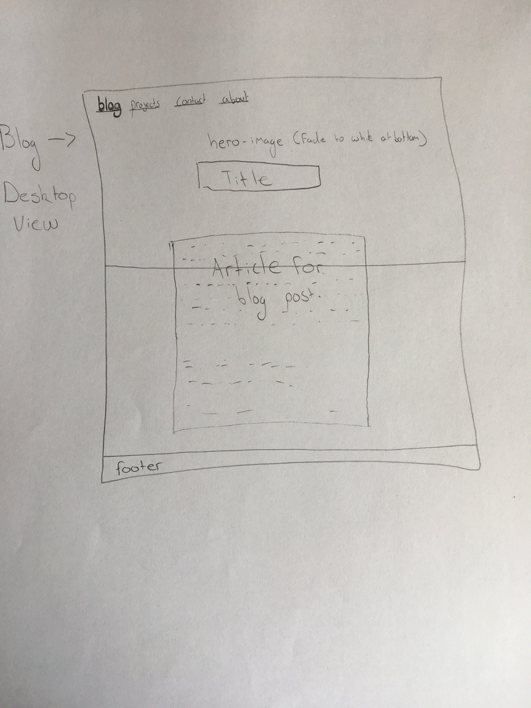

A responsive site is one that changes in appearance based on what sized screen or device it's being viewed on. This is extremely important due to the wide variety of devices people visit the web on. text made for a desktop screen is too small to read on a phone.
Mobile first design is designing a web page with the mobile version in mind first and then making the site adjust to bigger screen sizes accordingly, rather than the other way round. This is important because smaller devices generally have less computing power so you don't want someone trying to load a page with huge amounts of design code, which would slow the experience down.
Frameworks are ready-made blocks of code you can use to help build the site more easily. Instead of having to redesign the proverbial wheel, a ready made framework for you to adjust your code to work with makes creating a webpage a whole lot easier. Frameworks make it quicker to build a site, they're often easy to use, they provide solutions to common problems, and they work on a wide range of browsers. However, there are some resons to think twice about using them. They will often have a lot of code that may not be actually being used so unnecesarily increase load times, and they also can mean for a beginner that you don't learn to do the basics yourself.
Wireframes are simple design draft templates of how you want the important elements to sit on your webpage. Wireframes don't include any actual content or style, they are just there to give the page basic structure. They are useful to get a basic understanding of what the site is going to be like and also keeps focus on the main goals of the design process. Below is an example of one to help get a better idea.
